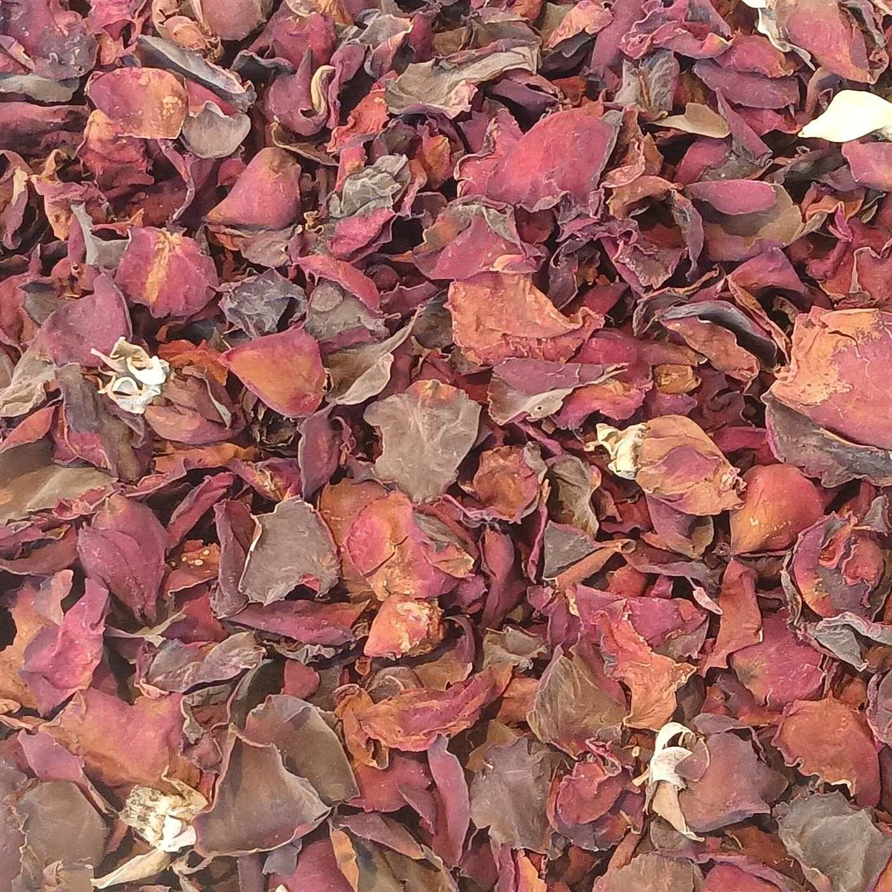

RECPART 05 / 0600:00:00:00
05 ZOOM LEVER
アクセス
レバーを倒すように、住所とマップへ寄ります。
| 所在地 | 〒802-0983 福岡県北九州市小倉南区志徳２丁目５−１９ |
|---|---|
| 電話 | 準備中 |
| 営業時間 | 準備中 |
| 定休日 | 準備中 |
| 駐車場 | 準備中 |
| scenery_gallerycafe |
W - T
引いて、寄って(イメージ)



05 ZOOM LEVER
レバーを倒すように、住所とマップへ寄ります。
| 所在地 | 〒802-0983 福岡県北九州市小倉南区志徳２丁目５−１９ |
|---|---|
| 電話 | 準備中 |
| 営業時間 | 準備中 |
| 定休日 | 準備中 |
| 駐車場 | 準備中 |
| scenery_gallerycafe |
W - T
